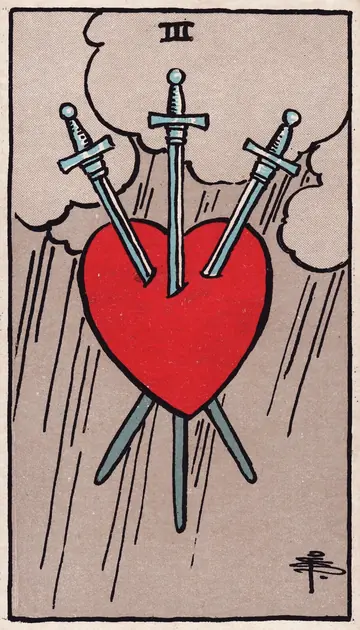

正位置ソードの3の正位置
キーワード：心の痛み・悲しみ・傷つく
恋愛
心が傷つきやすく、つらさを感じる時です。
相手の気持ちあなたとの関係で、心を痛めているようです。
この先時間とともに、痛みは和らいでいきそうです。
アドバイス悲しみを無理に抑えず、泣きたいときは泣いても大丈夫です。
気をつけることつらさから、自分を責めすぎないように。
この先時間とともに、痛みは和らいでいきそうです。
アドバイス悲しみを無理に抑えず、泣きたいときは泣いても大丈夫です。
気をつけることつらさから、自分を責めすぎないように。
人間関係
言葉や出来事に、傷つきやすい時です。
相手の気持ちあなたとの間のことで、傷ついているようです。
この先本当に大切な人が、そばにいてくれそうです。
アドバイス信頼できる人に、気持ちを聞いてもらいましょう。
気をつけること傷ついた勢いで、相手を傷つけ返さないように。
この先本当に大切な人が、そばにいてくれそうです。
アドバイス信頼できる人に、気持ちを聞いてもらいましょう。
気をつけること傷ついた勢いで、相手を傷つけ返さないように。
仕事・学業
失望や厳しい言葉に、落ち込みやすい時期です。
この先つらい経験が、あとで力になりそうです。
アドバイス指摘を、自分への否定と受け取りすぎないようにしましょう。
気をつけること落ち込んだまま、大きな決断をしないように。
アドバイス指摘を、自分への否定と受け取りすぎないようにしましょう。
気をつけること落ち込んだまま、大きな決断をしないように。
お金
お金のことで、つらい思いをしやすい時です。
この先少しずつ、立て直せそうです。
アドバイス信頼できる人や窓口に、相談しましょう。
気をつけること落ち込んだまま、大きな決断をしないように。
アドバイス信頼できる人や窓口に、相談しましょう。
気をつけること落ち込んだまま、大きな決断をしないように。
生活
暮らしの中で、つらいことが起きやすい時です。
この先時間とともに、心が癒えていきそうです。
アドバイスつらい時は、無理せず休みましょう。
気をつけること一人で抱え込まないように。
アドバイスつらい時は、無理せず休みましょう。
気をつけること一人で抱え込まないように。
今日の運勢
悲しい気持ちになりやすい日です。
この先少しずつ気持ちが落ち着きそうです。
アドバイス自分をいたわることを、いちばんにしましょう。
気をつけること一人で抱え込まないように。
アドバイス自分をいたわることを、いちばんにしましょう。
気をつけること一人で抱え込まないように。
逆位置ソードの3の逆位置
キーワード：回復・痛みが和らぐ・許し
恋愛
心の痛みが、少しずつ和らいでいく時です。
相手の気持ちあなたとのことで受けた痛みが、和らいできているようです。
この先痛みが癒え、新しい気持ちで恋ができそうです。
アドバイス回復していく自分を、認めてあげましょう。
気をつけること治りかけの傷を、自分から広げないように。
この先痛みが癒え、新しい気持ちで恋ができそうです。
アドバイス回復していく自分を、認めてあげましょう。
気をつけること治りかけの傷を、自分から広げないように。
人間関係
過去の傷を、許せるようになる時です。
相手の気持ちあなたとの関係を、許そうとしているようです。
この先関係を修復できそうです。
アドバイス許せる部分から、少しずつ許していきましょう。
気をつけること無理に元どおりに戻そうとしないように。
この先関係を修復できそうです。
アドバイス許せる部分から、少しずつ許していきましょう。
気をつけること無理に元どおりに戻そうとしないように。
仕事・学業
失敗のショックから、立ち直れる時期です。
この先立ち直り、再び前に進めそうです。
アドバイス経験を生かして、次に進みましょう。
気をつけること同じ状況に、再び自分を追い込まないように。
アドバイス経験を生かして、次に進みましょう。
気をつけること同じ状況に、再び自分を追い込まないように。
お金
お金の痛手から、回復していく時です。
この先少しずつ回復しそうです。
アドバイス経験を生かして、使い方を見直しましょう。
気をつけること無理に取り戻そうとしないように。
アドバイス経験を生かして、使い方を見直しましょう。
気をつけること無理に取り戻そうとしないように。
生活
心の痛みが和らぎ、暮らしが落ち着いていく時です。
この先穏やかな毎日が戻りそうです。
アドバイス気分が晴れることを、してみましょう。
気をつけること同じ状況に、自分を追い込まないように。
アドバイス気分が晴れることを、してみましょう。
気をつけること同じ状況に、自分を追い込まないように。
今日の運勢
気持ちが軽くなっていく日です。
この先心が軽くなりそうです。
アドバイス気分が晴れることを、してみましょう。
気をつけること悲しい思い出を、繰り返し思い出さないように。
アドバイス気分が晴れることを、してみましょう。
気をつけること悲しい思い出を、繰り返し思い出さないように。
このページの文章は、アプリ「ひとやすみタロット」の結果に使っている文章です。アプリでは、あなたの相談や、カードが出た位置（今の状況・これからの流れ・アドバイス）に合わせて、この中から文章を選びます。逆位置の読み方は逆位置のことをご覧ください。
「ソードの3」が出たら、あなたの相談ではどう読む？
アプリでは、質問への答えに合わせて、カードの言葉をあなたの相談に合わせて届けます。
Android 対応・会員登録なし